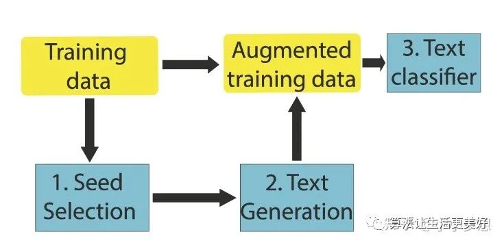
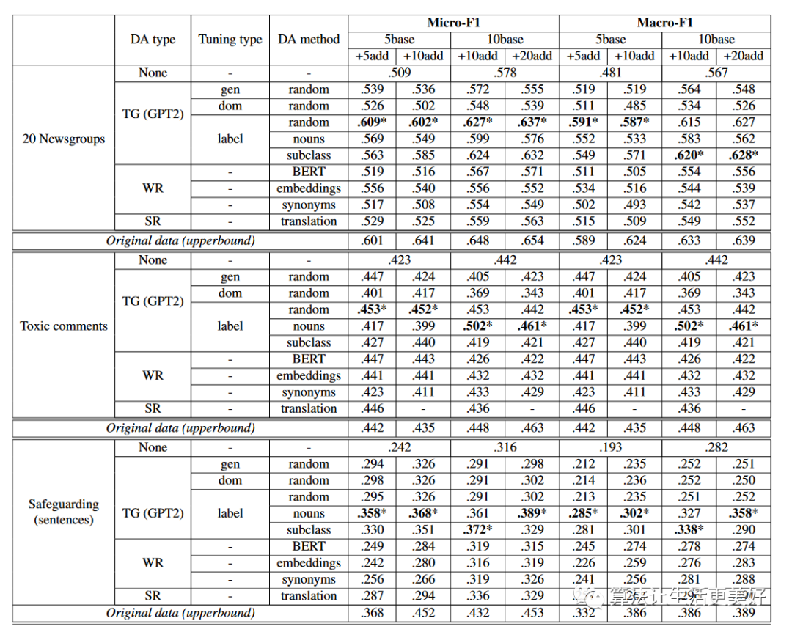
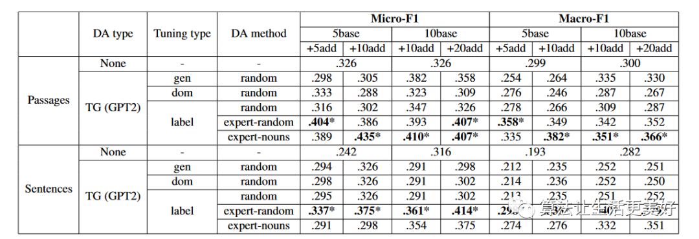
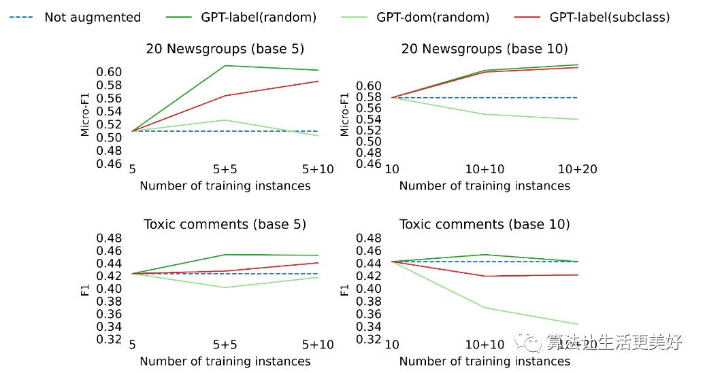
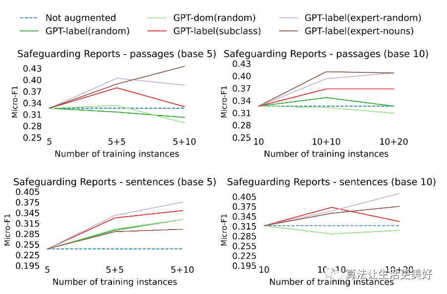

数据增强技术相信大家都不陌生，其主要用于扩充数据进而解决数据不平衡、数据稀疏等问题。近年来端到端的语言生成模型被越来越多的应用到数据增强中，其直接生成伪样本供后续模型训练。关于更多的数据增强技术可以看笔者之前的一篇文章：
https://mp.weixin.qq.com/s/jvgQXhkiqKmJLT3elCphzQ
今天要介绍的这篇paper正是利用生成模型具体的为GPT-2来生成样本，其提出的背景是目前还很少有研究在小样本分类这一场景下的利用生成模型进行数据增强的文章。论文链接：https://arxiv.org/pdf/2111.09064.pdf生成模型生成伪样本所面临最大的一个现实问题就是容易引进噪声，生成了一些低质量的训练样本，所以解决该问题成为关键，已经有相关工作进行了探索如下G-DAUG：其是利用了一些函数和启发式的方式从生成的样本中挑选出高质量的样本。https://arxiv.org/pdf/2004.11546v3.pdf而本paper的优化角度是从其前一步即从已有的样本中挑选出高质量样本去作为指导生成模型的seed生成高质量样本。大体流程如下：Seed Selection就是上述所说的步骤。
Seed Selection Strategies
具体的作者是提出了四种策略(Sedd Selection)来筛选样本来 fine-tuning生成模型，分别为random、Nouns-guided、Subclass-guided和Expert-guided。random
Nouns-guided
许多专业领域文章都存在着丰富的领域术语，所以作者认为样本中名称越丰富质量就相对来说越高，基于这一先验假设，就可以从包含名称和复合名称数量这一角度进行筛选，具体的作者用的包是 NLTKSubclass-guided
这个是通过子类这个先验条件来筛选，举个例子假设我们现在是在所猫狗分类任务，如果我们手头的数据不仅标有猫狗标签，而且还标有其二级分类，比如猫下面有折耳猫、麝香猫等等，狗下面有贵宾犬、拆家二哈等等。那我们在选样本的时候就要尽可能每个子类都有样本被选上，这样就可以确保多样性和平等性。Expert-guided
对于专业性很强的领域，通常是没有办法通过一些统计信息自动筛选的，其包含了很强的隐式语义，所以需要通过领域内的专家帮助筛选。
（1）不fine-tuning GPT-2，直接上通用的（2）在整个数据集上面 fine-tuning GPT-2（3）各个类别单独 fine-tuning 一个GPT-2首先看finetune方面的一些对比实验

（1）WR代表单词级别的替换即单词级别的增强比如同义词替换等等。（3）TG(GPT2)代表的生成语言模型生成样本这种方式。而TG(GPT2)下面的gen、dom、label分别代表上述三种模型热启中的(1)(2)(3)，而nouns和subclass分别代表Nouns-guided和Subclass-guided，random是为了对比，作者采用随机抽取样本作为seed的方式。（1）进行单个 fine-tuning GPT-2的方法（label）确实要好于其他的，其在所有数据集上面都表现良好。（2）在一些通用的数据集上面（不那么专业领域，比如20 Newsgroups和Toxic comments），dom方法居然不如gen，这说明在专业性不强的领域内，引入label确实会引入噪声。

Passages可以理解为更长的文本输入，Sentences是相对较短的文本输入，可以看到在Passages中除了‘5+5’之外，所有的gen好于dom,
当然在Sentences中gen/dom/label -
random基本持平，所以一个结论出来了：在finetune的时候建议在小的筛选过的高质量数据集上面进行，而不是在所有数据集上面。
再来看筛选策略对比实验

从上面可以看到random在少样本的时候表现还行，但是随着样本增多以及依靠其作为seed生成更多样本时，有策略的选择还是要好于random。

更详细的从上面可以看到有策略的选择，不论是noun-guided还是subclass-guided selection都带来了收益。
文章提出了四种筛选样本策略和三种finetune策略，得出的结论是:（1）最好在每一个类别上面进行finetune，尤其是对于长文本比如spassages或者documents级别的。（2）在一些专业性领域，有策略的筛选样本也带来了极大的提高。而在一些公共领域比如Newsgroups 和Wikipedia没有太大收益，但是当数据(seed)量上来后，还有有提升的。作者接下来的工作会探索更多选择策略等等,也为生成模型和 active learning的结合打开了思路的大门~
提高生成样本质量这本身是一个很有价值的研究方向，其实关于这方面还是有很多点可以做的，比如之前笔者看过的一篇阿里的paper（就在开头推荐的那篇博客《半监督之数据增强》中有介绍），是通过引入强化学习来做这个事情的。本文介绍的方法即文章所说的策略以及其引用的文献G-DAUG等其实可以看做是一种显示的方式，而上述阿里那篇基于强化学习的可以看做是一种隐式方式，总的来说都是可以探索的思路和角度，感兴趣的小伙伴可以深入思考探索~~